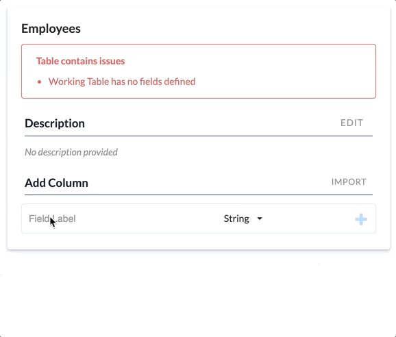

Configure a Working Table
In addition to a name and description, you must define columns for the working table. The IMPORT button will allow you to select a data source you have previously configured and copy the column structure from that source. You may not have an existing data-source with the exact structure you need, in that case, add each column one at a time.
See also: About Working Tables, Create a Working Table